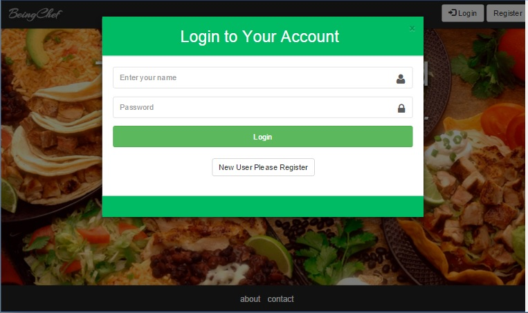
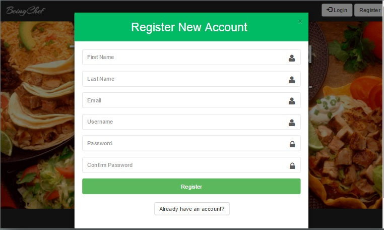
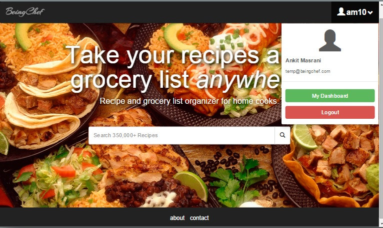
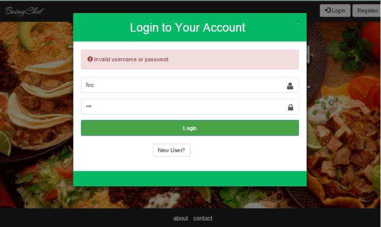

As shown below the login page is implemented as a 'modal'. This allows the user to to login from any page within the application without requiring to navigate to a different page. User validations for username and password are applied on this page. 
The user can view the registration page, either by clicking on the 'New User?' button on the login page or click the 'Register' button in the navigation bar of the application. Shown below is the registeration page. Regular field validations are applied on this page. 
Once the user is successfully able to login or register, it can view the the page shown below. Essentially, from this point on, the user can add recipes as favorites, add reviews and comments, follow another user or add recipe ingredients to grocery list until it logs out. until 
Shown below is the error message snapshot of an invalid login attempt. 